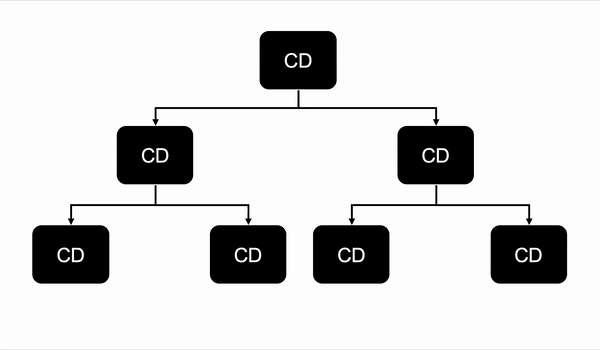

Change detection là một cơ chế chịu trách nhiệm kiểm tra và
tự động cập nhật View khi phát hiện thay đổi trong ứng dụng Angular để đồng
bộ dữ liệu giữa component và view.
Mỗi component có một change detector riêng. Và do đó,
chúng ta có thể inject nó vào contructor của component class để quản lý
quá trình change detection theo cách thủ công để cải
thiện hiệu suất.
Khi Change detection theo dõi sự thay đổi của component, nó
chỉ quan tâm đến sự thay đổi của các property được ràng buộc (binding) với
template view (đây là những ràng buộc giữa view và model - tức khi model
update thì phần nào trên view cần phải cập nhật lại). Nếu các property này
thay đổi, template view sẽ được cập nhật.
Trong ví dụ trên, khi Change detection thực hiện kiểm tra,
nó chỉ quan tâm đến sự thay đổi của firstname và lastname.
Nếu firstname hoặc lastname thay đổi, template View sẽ tự
động được cập nhật.
Nguyên nhân nào làm cho các property được binding thay đổi và Change
detection được kích hoạt khi nào?
Sự thay đổi của các property được binding trong ứng dụng Angular có thể được
phát sinh bởi 3 thứ sau:
- DOM events: click, change, submit,...
- Http Request: Lấy dữ liệu từ backend server.
- Timers: setTimeout(), setInterval()
Điểm chung của những thứ này là bất đồng bộ (asynchronous).
Điều này nói lên rằng, bất cứ khi nào có hoạt động bất bộ thực hiện, trạng
thái của ứng dụng có thể bị thay đổi. Do đó, theo mặc định, khi hoạt động
bất đồng bộ hoàn thành, Angular sẽ tự động kích hoạt
Change detection để kiểm tra trạng thái của toàn bộ
component trong ứng dụng.
Ở đây có một vấn đề, như chúng ta đã biết, các hoạt động bất đồng bộ không
được xử lý bởi JavaScript mà được xử lý bởi Web APIs do browser cung cấp và
chúng ta không biết được khi nào một hoạt động bất đồng bộ hoàn thành (được
xử lý xong).
Vậy làm thế nào mà Angular biết được chính xác khi nào cần kích hoạt
Change detection?
Câu trả lời ở đây là nhờ vào
NgZone - một service được xây dựng dựa
trên thư viện Zone.js.
-
Theo mặc định, Zone.js sẽ vá (monkey-patched / viết lại / ghi đè) tất cả
các phướng thức bất đồng bộ của APIs gốc như setTimeout(),
setInterval(), DomEvents,... và chạy bên chúng bên trong một zone mới.
Nhờ đó mà nó biết được khi nào một hoạt động bất đồng bộ sẽ ra và khi
nào hoạt động đó hoàn thành.
-
NgZone kế thừa lại các APIs monkey patched của Zone.js và bổ sung thêm
một số event (Observable) như onTurnStart(), onTurnDone() để thông báo
thời điểm hoạt động bất đồng bộ bắt đầu và kết thúc.
-
Khi chúng ta khởi chạy ứng dụng Angular, NgZone sẽ tạo ra một zone và
đặt tên là angular và đồng thời, Angular Application cũng đăng
ký (subscribe) để theo dõi sự kiện onTurnDone(). Tất cả các
hoạt động bất đồng sẽ chạy trong angular zone này. Khi hoạt
động bất đồng bộ hoàn thành, angular zone sẽ phát ra sự kiện
onTurnDone() để thông báo, Angular sẽ bắt sự kiện này và kích hoạt
Change detection.
Ở đâu đó trong source code của Angular, có một thứ được gọi là
ApplicationRef, lắng nghe sự kiện
NgZones onTurnDone. Bất cứ khi nào sự kiện này được kích
hoạt, nó thực hiện một hàm tick() về cơ bản thực hiện
phát hiện thay đổi (Change detection).
Do đó, khi có sự kiện bất đồng bộ được thực thi, Angular sẽ kích hoạt change
detection để kiểm tra trạng thái có thay đổi hay không, nếu có thì sẽ tự
động cập nhật View. Và vì mỗi component có bộ change detector riêng nên khi
có hoạt động bất đồng bộ xảy ra, change detection sẽ được kích hoạt cho tất
cả các component trong ứng dụng bắt đầu từ root component (thường lại
AppComponent).

Các lưu ý về Change detection
- Mỗi component có một change detector riêng.
-
Quá trình theo dõi sự thay đổi (change detection) luôn bắt đầu từ root
component (thường là AppComponent) đến tất cả các component con cháu của
nó. Do đó, việc kích hoạt change detection tại một component bất kỳ sẽ dẫn
đến kích hoạt change detection ở tất cả các component.
-
Change detection chỉ quan tâm đến các property được binding đến template
và nó chỉ cập nhật phần UI có model binding tương ứng bị thay đổi chứ
không render lại toàn bộ UI.
Đọc thêm
Trong Angular có 2 chiến lược change detection có thể được chọn để thiết lập
cho component gồm:
-
ChangeDetectionStrategy.Default: đây là chiến lược được sử dụng mặc định trong Angular khi component
được tạo bằng Angular CLI. Với chiến lược này, change detection sẽ tự động
được kích hoạt khi có bất kỳ hoạt động không đồng bộ nào làm thay đổi
property (được binding với view) xảy ra trong các component.
-
ChangeDetectionStrategy.OnPush: chiến lược này sẽ loại bỏ các lần gọi change detection không cần thiết
cho component được thiết lập và các component con của nó - Các component
con của component sử dụng chiến lược OnPush cũng sẽ bị buộc sử dụng chiến
lược OnPush, cho dù chúng có thiết lập chiến lược thành Default thì vẫn
không có tác dụng, không override lại.
Với chiến lược OnPush, change detection chỉ được gọi khi
@Input() property của component thay đổi hoặc thực hiện các
DOM events như click, change, submit,... Các Timers như
setTimeout(), setInterval(), hoặc Http Request sẽ không kích hoạt change
detection trong chiến lược này mà chúng ta phải gọi change detection thủ
công bằng cách gọi hàm marForCheck() từ
ChangeDetectorRef được inject vào contructor của component.
Sự khác biệt giữa detectChanges() và markForCheck()
Sử dụng detectChanges() khi chúng ta đã cập nhật model sau khi
Angular đã chạy phát hiện thay đổi hoặc thực hiện runOutsideAngular().
Sử dụng markForCheck() nếu chúng ta sử dụng OnPush và chúng ta đang
bỏ quá ChangeDetectionStrategy bằng cách truyền same reference cho Input
hoặc cập nhật model trong setTimeout().
Đọc thêm